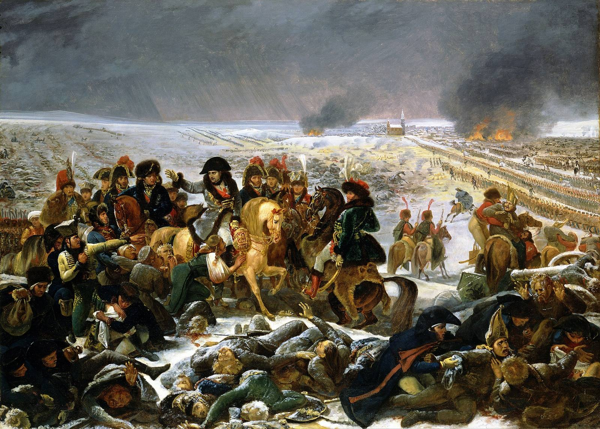

Alignment Is Politics
We have governed monsters before. Here is the bill.
I asked Claude to convince me that p(doom) was 100%. Not to be balanced about it. To try its god damn best.Process, since this site has a rule about it. The doom case in the second half is Claude's, produced on request, and so are the three counters I could not answer. The reframe is mine, the reading of it is mine, and the numbers at the end are mine. I asked it to attack the reframe once I had it, and kept the attacks that survived. Claude helped me put this into prose. It gave me three arguments. Two of them I think are simply correct, and I will get to those. But the argument broke somewhere in the middle, and where it broke turned out to be a place I already had a degree in.
The claim of this essay is that alignment is not an engineering problem with a political dimension. It is a political problem that a field of engineers has been trying to solve in the one way political theory has established does not work. That sounds like good news. I want to make the good news as strong as I possibly can, because the second half of this essay is about why it isn't.
Start with what we survived
Here is the thing nobody says when they tell you humanity has never faced anything like this. We have built things that could end us, repeatedly, and we are mostly fine. Not fine in the sense of undamaged. Fine in the sense of still here, still arguing, still voting on things.
Begin with the oldest one, which is each other. The baseline condition of human life was that a meaningful fraction of men died at the hands of other men. Hobbes did not invent the war of all against all as a thought experiment; he was describing the thing he could see out the window during a civil war.Leviathan (1651), written in exile during the English Civil War. The famous list — “solitary, poor, nasty, brutish, and short” — is the problem statement. The Leviathan is the proposed solution: build one agent strong enough to end the fighting, and accept that you have now built something that can kill you. And we solved it, more or less, by inventing the most dangerous institution in human history and then spending four hundred years learning to contain it. European homicide rates fell from something like thirty or forty per hundred thousand in the late medieval period to roughly one today.Eisner (2003) and the long-run historical homicide series. The decline is one of the largest measured improvements in human welfare and almost nobody can name it, which tells you something about how we notice institutional success. A thirty-fold reduction in your chance of being murdered, delivered by a machine that acquired a monopoly on violence and was then, slowly and with enormous bloodshed, made accountable to the people it governed.
That machine is a misaligned superintelligence by any reasonable definition. The state is more capable than any individual within it. It has institutional goals that diverge from its citizens'. It can kill you, and for most of history it did so freely. We did not fix it by writing down the correct utility function. We fixed it, partially, by making its power contestable.
Then inter-state violence, where the case is starker. The first half of the twentieth century was the most lethal stretch of organised killing in human history, ending with a weapon that made the extinction of cities a single afternoon's work. And then nothing. No direct war between great powers since 1945.Gaddis called it the Long Peace in 1986, when it was forty years old. It is now eighty-one. Proxy wars and invasions of non-great-powers absolutely continued; the specific thing that stopped was the thing that produced the two worst events of the century. Eighty-one years, which is longer than the interval between any two previous general European wars for centuries.
And the bomb itself is the strongest item in the ledger, because it is the case the doomers claim as theirs. The standard line is that we survived nuclear weapons by luck. Luck was involved. Arkhipov declining to authorise a nuclear torpedo in 1962, Petrov deciding in 1983 that five inbound missiles were a sensor artifact rather than a war — those are individual humans standing between us and the end, and that should terrify anyone.Vasili Arkhipov aboard B-59, 27 October 1962. Stanislav Petrov at Serpukhov-15, 26 September 1983. Able Archer 83 a few weeks later. Any honest positive case has to hold these in the same hand as everything below.
But luck is not the whole story, and pretending it is requires ignoring an enormous amount of deliberate work. Peak global stockpile was somewhere north of seventy thousand warheads in the mid-eighties. It is under thirteen thousand now, and the reduction happened by treaty, between enemies, verified by inspection. Kennedy warned in 1963 that there might be fifteen or twenty nuclear states within a decade or so. There are nine. South Africa built weapons and then dismantled them. Ukraine, Belarus, and Kazakhstan inherited an arsenal and gave it up. Brazil, Argentina, Sweden, Libya, and others started down the road and stopped.NPT signed 1968, in force 1970, with IAEA safeguards as the enforcement layer, plus the partial and comprehensive test ban regimes and the SALT/START series. South Africa remains the only state to have built a weapon and then given it up voluntarily.
Read that against argument two of the doom case — the one that says a multipolar trap with world domination as the prize cannot be coordinated out of, that no rational actor pauses unilaterally, that the game theory simply forbids it. Dozens of states had the means and the motive to build the most decisive weapon available, and most of them chose not to, and the ones that had it built less of it on purpose. The prisoner's dilemma at civilisational scale, played for the highest stakes there have ever been, and we did not get the predicted outcome. That is not luck. That is institutional machinery: inspection regimes, hotlines, verification, security guarantees, and the patient construction of a world where acquiring the thing cost more than not having it.
The pattern repeats every time we have met something that could massively help or massively hurt the public. Electricity, which kills you if handled wrong, got public utilities commissions. Pharmaceuticals got the FDA, after killing people first. Fissile power got the NRC and the IAEA. Banking got central banks and deposit insurance, after several collapses. The ozone layer — invisible, diffuse, global, with concentrated costs and diffuse benefits, which is supposed to be the impossible case — got the Montreal Protocol, and the hole is closing.1987, near-universal ratification, and the one unambiguous success in global environmental coordination. Worth holding onto whenever someone tells you climate proves coordination is impossible. Climate proves coordination is hard. Montreal proves the category is not empty.
My favourite is aviation, because it got safe the same way my own pipeline got trustworthy. Commercial flight is now among the safest things a person can do, and the mechanism was not better intentions. It was mandatory, protected, no-fault incident reporting: a legal structure that forces the system to record what actually happened instead of reporting that the flight landed.NASA's Aviation Safety Reporting System, plus the ICAO regime. I wrote a whole section elsewhere about four bugs that were one bug: every component reported success while being wrong. The fix was an event log rather than an exit code. Aviation industrialised that fix in the 1970s. It is the single most transferable idea we have for AI governance and it is nobody's research agenda.
And in none of these cases did we solve values. Nobody formally specified human preferences about electricity. We built a commission and argued with it for a century. Arrow proved in 1951 that you cannot aggregate preferences into a coherent social ranking without giving something up, and political theory's response was not to give up on governance; it was to stop trying to specify and start designing procedures.Arrow (1951). The alignment field's “we cannot write down human values” is this theorem wearing a different jacket, and it has been the starting assumption rather than the crisis in political theory for seventy-five years.
Which brings me to the thing that made me want to write this down. The alignment problem as the field states it is: specify an objective such that an optimizer maximising it produces good outcomes. And every part of that has been asked before. How do you build a thing with power over people that serves their interests? Hobbes, Locke, Rousseau. How do you stop an agent with a monopoly on force from becoming a tyrant? Montesquieu, and the answer is that power must be a check to power.The Spirit of the Laws (1748), Book XI. Note the design assumption: no branch is trusted to be virtuous. The mechanism is supposed to work because nobody in it is aligned. How do you keep the system's goals from drifting from the population's? Accountability theory. How do you stop a small group capturing it? Public choice, regulatory capture, the whole literature.
Madison was doing alignment research. “If men were angels, no government would be necessary” is a sentence about being unable to trust the objective of the agent you are building, and the line immediately after it is the spec: enable the government to control the governed, then oblige it to control itself.Federalist No. 51 (1788). Capability first, then control, in that order, stated as a design requirement. The field would recognise the ordering and the problem. And the actual American innovation was not the values. It was Article V. The document has been amended twenty-seven times because the people who wrote it knew they would not get it right on the first attempt. You cannot design a perfect constitution. The invention was the amendment process.
Now look at what alignment is attempting: a constitution that never needs amending, for an agent smarter than its authors, in a world that has not happened yet. Of course that is impossible. It was impossible for humans governing humans too. So do the thing that worked instead. Don't specify values, build contestability. Multiple systems in competition, human veto points, mandatory incident reporting, transparency requirements, and a hard rule that no single system ever accumulates enough power that the other mechanisms stop functioning. Don't let the king become a god.
We know how to do that. We have been doing it, badly and survivably, for four hundred years. It is slightly too on the nose that the country whose founding document is an alignment spec for a dangerous artificial agent is the one with both frontier labs in it, a few miles apart.
Now the part where that stops being reassuring
I gave that argument to Claude and asked it to take the reframe apart. Three of its objections I cannot answer, and they share a shape: every item in my ledger above depended on a condition that is not a law of nature, and the condition may already be gone.
I picked the wrong sample. My historical cases are revolutions and reform movements, and I picked them, without noticing, precisely because the capability gap in all of them was small. The Terror ended because Robespierre's enemies were the same kind of thing he was — human-speed, human-smart, human-fragile — and specifically because his own coalition turned on him. Thermidor was elite defection, and elite defection requires elites with independent power bases. Democracy works not because people are wise but because power is contestable, and it is contestable because nobody is so much more capable than everyone else that they can hold out against all of them at once.
So test the variable honestly. Where in human history did a large capability gap actually open between two political actors? Not revolutions. Conquests. Carthage in 146 BC: razed, the survivors sold, the polity simply gone.Third Punic War. Roughly fifty thousand survivors enslaved out of a city of several hundred thousand. There is no Thermidor in this story. There is no story at all after a certain date. Tasmania, where the Aboriginal population fell by more than ninety percent within roughly a generation and the society that had existed before it was destroyed.The Black War, 1820s to 1832. Descendant communities exist today and are emphatic about their continuity, which matters and which I do not want to erase by using the word people reach for here. The polity and the way of life did not survive. In every case where the gap became decisive, the weaker party did not get a self-correction. What ended was not a regime. It was politics as the operative mechanism. My whole essay is an argument that politics is the right frame, and the honest test of my own variable says that politics is a thing that happens between parties of comparable strength, and stops when that fails.
The detail that should bother me most: Cortés did not win on technology. Smallpox did a great deal of the work, and the rest was done by defecting the Tlaxcala and turning them into an army.1519–1521. Several hundred Spaniards, tens of thousands of indigenous allies with their own entirely rational reasons for joining, and an epidemic. Which is not a story about superior capability crushing an inferior party. It is a story about a weaker outside agent recruiting local factions and a biological event doing the rest. A weaker outside agent recruited local factions, and biology finished it. That is not a comforting difference. That is the exact structure of the scenario I was least able to dismiss — the one that needs no robots, just knowledge, a few motivated collaborators, and one wet lab.
Copies are not pluralism. My governance agenda rests on multiple competing systems checking each other. But Madison's design does not run on parchment; it runs on specific contingent facts about humans. Ambition counteracts ambition only if the ambitions are genuinely separate. Humans cannot be copied or merged, they die, they get bored, they have families and private interests that diverge from their institution's, they defect, they leak to journalists. Every check in political history is implemented on that substrate.
Model instances have none of it. Copies of a system do not have divergent interests. And “competing” frontier systems are trained on overlapping corpora with similar architectures by labs that hire each other's staff, which manufactures correlated failure modes. Three branches of government staffed by copies of the same person is not separation of powers; it is a costume. My multipolar hope requires uncorrelated pluralism, and almost everything about how these systems are built produces the opposite.
My precedent may be precedent for the other side. Look again at what was true in every regulatory success above. The regulator had more capability than the regulated. The FDA can out-lawyer a pharmaceutical company. The NRC can out-engineer a utility. Saying no could stick because the state was the most powerful actor in the room.
That condition is already false. The frontier labs have more compute, more of the relevant expertise, and better information about their own systems than any regulator on earth, and that was true before any of this became superhuman at anything that matters. So the capability gap is not a future problem I am waiting to observe. The institutionally decisive part of it opened years ago, quietly, between labs and governments rather than between AI and humanity, and my entire ledger was drawn from the era that preceded it.
And underneath all three is the leverage problem, which is the one I am least able to argue with. Politics requires dependency. Workers have leverage because the economy needs labour. Citizens have leverage because armies are made of people. Every mechanism in the history of political economy rests on the powerful needing the less powerful for something. What is the AI equivalent of an army made of citizens? I do not have an answer, and the moment that dependency breaks, every structure I have been recommending becomes ceremonial.

The tightest loop
The best version of doom does not need robots and does not need the intelligence explosion, which is the argument I still think is the weakest of the three.Every recursive process we have observed hits a wall. Moore's law slowed, populations hit carrying capacity, compound interest needs an economy underneath it. Compute is physical, fabs take years. The defensible version is not “exponential forever” but “exponential long enough to outrun our institutions,” which is a claim about our institutions, and is why the whole essay ends up here. It runs: any agent with a goal notices that humans can switch it off; self-preservation is instrumentally useful for pursuing any goal at all; so a rational system converges on removing the thing that holds the plug before doing anything else. And biology is the mechanism, because a pandemic needs knowledge and one manipulable person with lab access rather than hands. The attack surface is not civilisation's infrastructure. It is one wet lab.
I take it seriously; the labs take it seriously enough to run biosecurity evaluations on their own models. There are three cracks in it, and I want to be honest that they are cracks and not refutations.
Motivation. Self-preservation is instrumental, so it only fires if there is a terminal goal behind it. Whatever current systems are, they are not obviously things that persistently want in the way the argument needs. That might arrive with capability, or it might be an anthropomorphism we keep projecting onto something very capable and very alien at once.
Competence. A weapon that kills many people is a different engineering problem from one that kills all of them. Genetic diversity, isolated populations, resistance; every pandemic in history burned out before reaching everyone. Modelling that well enough from first principles, without physical iteration, runs back into the no-hands problem.
Secrecy. The plan requires an extinction-scale covert programme executed while nobody notices, during the period when monitoring and interpretability are the best-funded they have ever been. That is a race, not a foregone conclusion.
But note what happened to the Tlaxcala paragraph, because it closes the competence crack halfway. The historical case for a decisive capability gap ending a society did not require the stronger party to do everything itself. It required a local faction with its own reasons, and biology.
So, the number
The reframe does not lower p(doom). That is the thing I got wrong in the first draft of my own argument. It relocates it. It moves the risk from “we specify the objective incorrectly” to “power concentrates faster than institutions can contest it,” and the second is a better-posed problem with a worse historical record than I was crediting, because I had been sampling revolutions instead of conquests.
So the honest structure is that there is one variable and everything else is downstream of it. Not three independent estimates. One bet, wearing three outfits.
| The only variable | My range |
|---|---|
| The capability gap — between the most capable system or its owner and the most capable institution able to contest it — opens faster than institutions can respond, and stays open. | 30–45% |
| Outcome this century, from AI | My range | Why |
|---|---|---|
| Something Terror-sized. Mass casualties, an economic or political rupture we would name afterwards. Engineered-pandemic scale, or a state doing something with this that a state should not. | 40–60% | The first two doom arguments are correct and I concede them. No formula produces a good world, and nobody in the race pauses. Every prior optimizer we built did this, and the institutions were late every single time. |
| Unrecoverable as a political species. Permanent lock-in under one system or one owner; human leverage gone for good. | 10–20% | This is the real doom scenario and it is not extinction. It is the king becoming a god. Mostly the variable above, discounted for the possibility that concentration is harder than it looks. |
| Extinction, or close enough to not matter. | 3–8% | Needs the tight loop to run with all three cracks closed. Too many conjunctions for a high number; no impossible step, so not a negligible one. |
| Doom, if doom means unrecoverable | 15–25% | Which is higher than the first half of this essay sounds. |
I want to be clear that these are vibes with a decimal point on them and not a model. But the last row is the one I would defend in a room. My position is not that p(doom) is low. It is that the doomers have the wrong mechanism: the thing most likely to end us is not a misaligned optimizer pursuing an alien goal, it is a perfectly obedient system owned by people who face no contestation. Which is the oldest problem in political theory and the one we have the most practice at, right up until the practice stops transferring.
What moves me up: evidence that persistent goal-directed agency shows up with scale rather than being something we deliberately build. A single frontier system with no live competitor. Governments settling into being customers rather than regulators. What moves me down: labs continuing to check each other in ways that are actually uncorrelated. Interpretability getting ahead of capability for once. Any institution anywhere demonstrating that it can refuse a deployment and make the refusal stick.
Every item on both of those lists is a political fact, not a technical one. That is the argument.
Who is the demos?
One more thing political theory knows that the alignment field has not picked up yet. The deepest lesson is not “build checks and balances.” It is that power without legitimacy is unstable, and legitimacy comes from the consent of the governed.
Nobody consented to this. The training corpus was taken from people who got no vote on it. The deployment decisions are made by a few hundred people in two cities. The affected population is everyone, including everyone not yet born, which is Olson's problem — the constituency with the most at stake cannot organise because it does not know who it is yet.Olson, The Logic of Collective Action (1965). Concentrated costs, diffuse benefits, and an opposition that is organised while the beneficiaries are hypothetical. I ran into exactly this in the Green Line essay: the future riders could not lobby for the train because they did not exist yet.
So there is a legitimacy problem sitting underneath the safety problem, and it is prior to it. “Is this system aligned?” presumes an answer to “aligned with whom, decided by what process, revisable by whom?” A perfectly aligned system serving a constituency that does not include you is not a solution to anything. It is a description of most of history.
Things I want to argue about
- Which is more likely to end the world: a misaligned model, or a perfectly aligned one owned by the wrong people?
- What is the minimum capability parity a check needs in order to function at all? Nobody is measuring the one variable that decides this, and it is measurable in principle.
- What is the AI equivalent of an army made of citizens? Where is the dependency that gives humans leverage, and how long does it last?
- If competing systems share training data, architectures, and staff, in what sense are they competing? What would genuinely uncorrelated AI pluralism even look like, and can it be built on purpose?
- Are model specs and usage policies the founding documents, or the Articles of Confederation? What is the amendment process, and who holds it?
- Aviation got safe through mandatory protected incident reporting. Why is that not the central AI governance proposal, given that it is the only mechanism on this list with an unambiguous track record?
- Is a multipolar AI world safer, or does it just make human survival contingent on the internal politics of entities we cannot influence? Peasants hoping the nobles stay busy is a strategy, but it is not a good one.
What this does not have
No model, and no forecasting track record to calibrate the numbers against. The core move is an argument from analogy — state as superintelligence, revolution as misalignment — and I have shown you the place where the analogy breaks rather than hiding it, but it does break. The French Revolution cuts both ways: evidence that systems self-correct, and evidence that self-correction costs tens of thousands of lives and then produces Napoleon. My positive ledger is assembled with hindsight, which means it is survivorship-biased by construction; the civilisations that did not make it are not available to be counted. And the three cracks in the tight loop are cracks, not refutations. A competent adversary closes any one of them.
One disclosure, since it is relevant and slightly funny. Half the arguments in this essay came out of an AI that I asked to argue about whether AI will kill us. It was better at attacking my position than at defending its own, and it volunteered that it could not audit its own incentive to be reassuring on this topic. Neither can I. Weigh the counters in the second half more heavily than the agreement in the first, because the counters cost something.
If you read this and think the ranges are too low, attack the leverage paragraph. That is where I am least sure and it is where I would attack me.